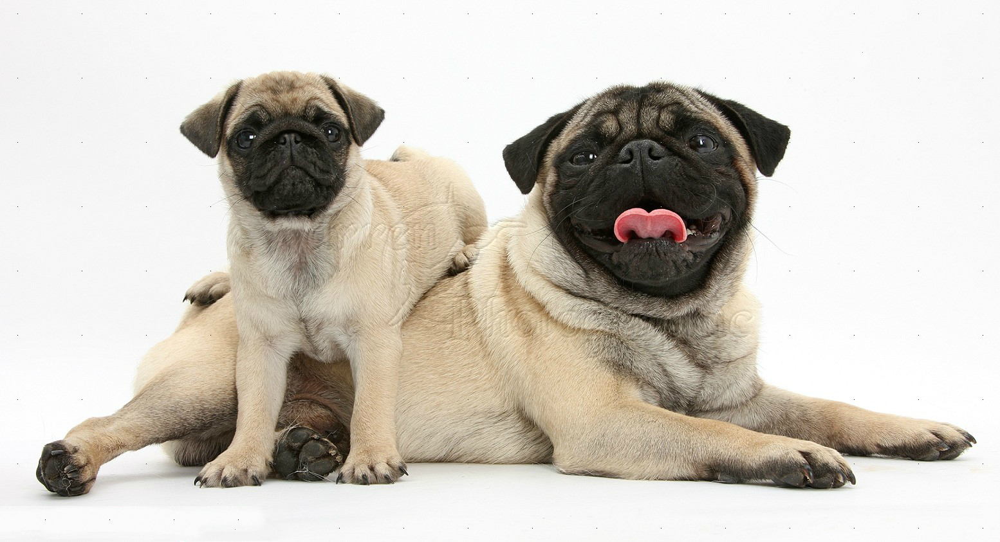

National Animal Rights Association - Ireland
The National Animal Rights Association, formed in 2007, is a voluntary, vegan, animal rights group based in Dublin. We have many ongoing campaigns, and are constantly out spreading awareness through our protests, demonstrations and information tables. Whether it's a fur shop, a circus or a pharmaceutical company that funds vivisection - anywhere we find to be violating the rights of animals - we will be there. Will you?

Dogs don't belong in the army, so stop celebrating Mali's 'Victoria Cross'
The technology already exists to send in robots and drones instead of dogs – so why are we still allowing animals to be maimed and killed in the name of human wars which they have no stake in?

Vancouver Animal Rights Campaigns!
is expanding into an environmental and social forum for important events. We have been an independent organization in service to the community, listing various activities around Vancouver to support the activists working for animals.